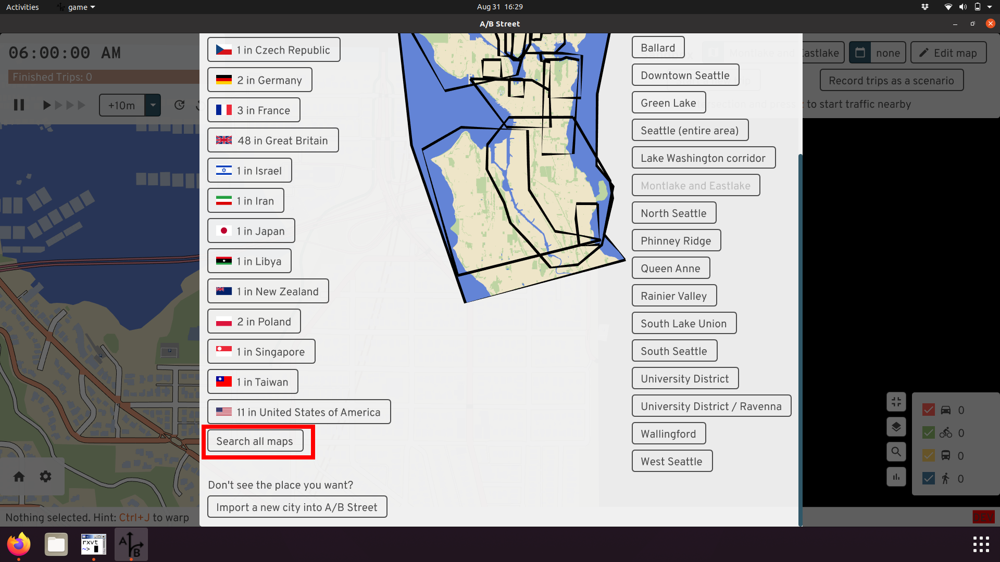
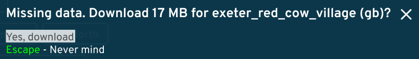
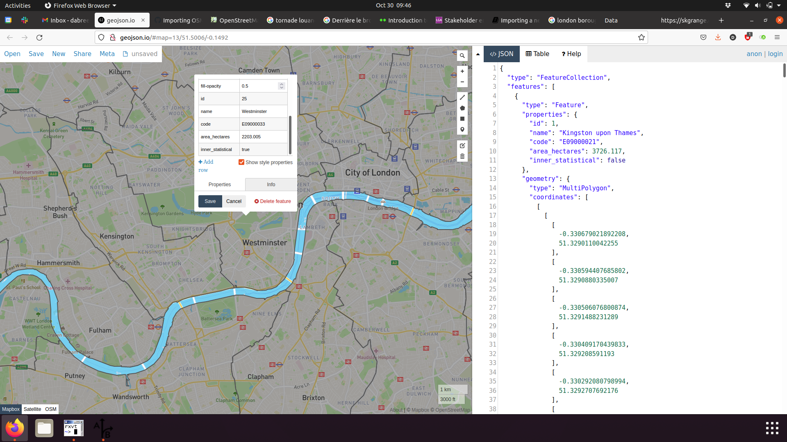
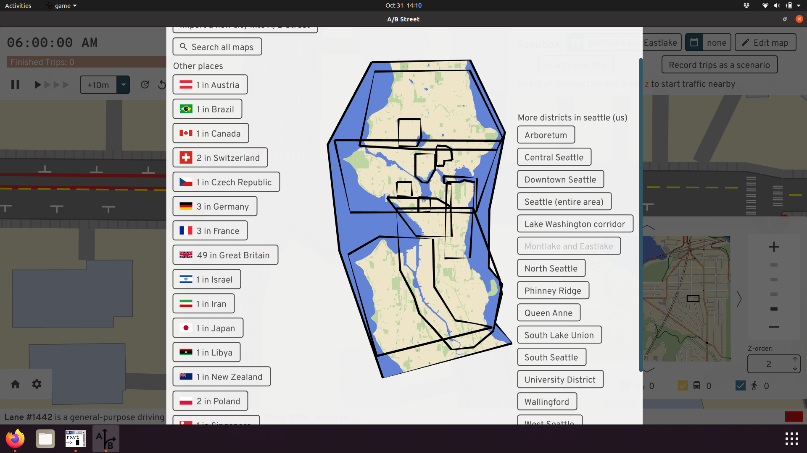
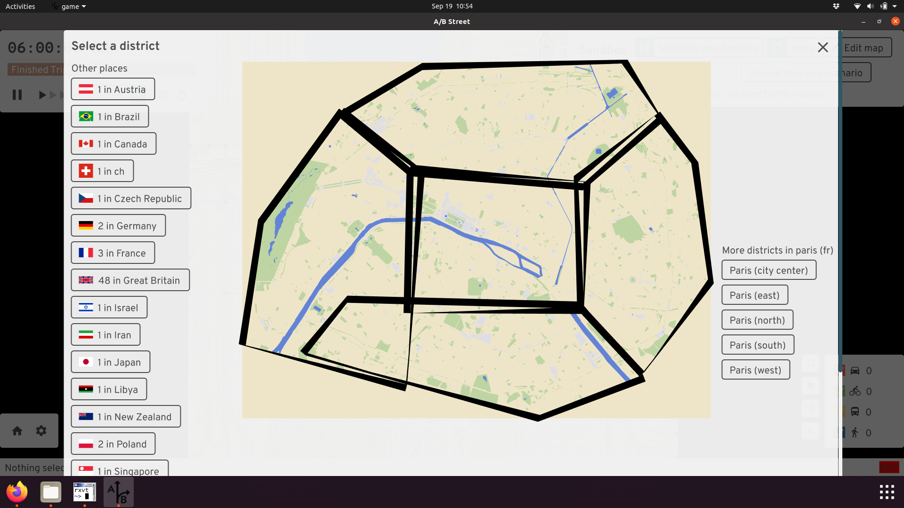

Importing a new city into A/B Street
If you get stuck, please email dabreegster@gmail.com or file a Github issue. I promise quick turnaround time. All you need to do is send the boundary of the area you want, drawn with geojson.io.
The easy method
This only works in the downloaded version, not on web.
- Click the map name in sandbox mode to change your location.
- Click "import a new city"
- Follow the instructions. That's it!
This may take a few minutes, depending on download speed. Be sure to use the polygon tool to draw an area, not the polyline tool.
If the city has already been imported
A/B Street includes many cities already. Once you're running the game (natively or on the web), click on the Sandbox option, then check the top for a button to change the map:

You can browse through a list of cities per country, or use a text search:

You may need to download data for that city:

You should be able to open the map. In this case above, the map data was saved
as data/system/gb/exeter_red_cow_village/maps/center.bin.
How to pick boundaries
How do you decide what part of a city to import? It can be tempting to use pre-existing administrative boundaries. There are a few problems:
- Official boundaries might exclude something relevant to transportation in the area. For example, London boroughs don't cover the River Thames or its bridges! Or if you're studying low-traffic neighborhoods, an area near the border of two boroughs might not include enough surrounding context.

-
File size is hard to tune. You have to play around with this to make the resulting area large enough to be useful, but the map file small enough to comfortably load. About 50MB uncompressed (usually 20MB gzipped) is a good target.
-
You might have to adjust the boundary to exclude the coastline and ocean, due to a bug.
You can create multiple districts covering a city. The districts can partially overlap, and you don't have to cover everything. It's totally dependent on what you want to study. The current Seattle boundaries are just based on different projects we've worked on:

You can also just make best geographic guesses like in Paris:

The more maps configured to always be imported, the slower my development workflow gets when working on map importer code. So I'd also request you don't go overboard and ask for lots of areas, unless you're going to actively work on some advocacy or research across multiple A/B Street releases. You can always import an area yourself in the UI.
Advanced: Using the command-line
The process above using the UI just calls a tool to do all of the work. If you want, you can just call that tool from the command line. First save a GeoJSON file with your boundary. Then...
Using a .zip release:
./cli one-step-import --geojson-path=boundary.geojson --map-name=prague
Building from source:
cargo run --release --bin cli -- one-step-import --geojson-path=boundary.geojson --map-name=prague
The new map is located in the country with code "zz" (this isn't a real
country), in the "oneshot" city. This is stored in
data/system/zz/oneshot/maps.
Advanced: Adding the city to A/B street permanently
The easiest method is to just ask Dustin to do this. The full process:
-
Make sure you can run
import.sh-- see the instructions. You'll need Rust, osmium, gdal, etc. -
Create a new directory:
mkdir importer/config/xy/your_city, wherexyis a lowercase two letter country code from https://en.wikipedia.org/wiki/ISO_3166-1_alpha-2 -
Use geojson.io or geoman.io to draw a boundary around the region you want to simulate and save the geojson locally as
importer/config/xy/your_city/region_name.geojson. -
Edit
importer/src/map_config.rsif needed. -
Run the import:
./import.sh --city=xy/your_city --raw --map -
Update
.gitignore, followingtel_avivas an example. Keep sorted! -
Fill out
nice_map_nameinmap_gui/src/tools/mod.rs.
Send a PR with your changes! I'll generate everything and make it work with
updater, so most people don't have to build everything from scratch.
Also, you can divide the city into multiple regions, repeating step 4 and declaring more polygon boundaries. The boundaries may overlap each other, and they don't have to cover all of the space. Picking good boundaries may take trial-and-error; the goal is to keep the resulting map file size small, so that it loads quickly, while capturing all of the area needed to simulate something interesting. This is easiest when you have some local knowledge of the area, and at least a vague goal in mind for what you want to study.
Advanced: Importing a .osm file directly
This section assumes you're comfortable working on a command line. If you have a
.osm XML file, you can import it directly by running
cargo run --release --bin cli -- oneshot-import /path/to/extract.osm. If
you're running from a .zip release and not building from source, replace the
first part with ./cli oneshot-import.
Assuming this succeeds, it'll create a file in the
data/system/zz/oneshot/maps/ directory. In the UI, you can open the "zz"
country to find it.
If you save a .osm file from JOSM, you might get an error importing related to
convert_osm/src/clip.rs. If so, delete the <bounds> element from the top of
the .osm file and try again.
If you follow this process, the resulting map won't have any border intersections, which will break parts of the simulation:

You can fix this by creating the Osmosis .poly file and passing
--clip-path=/path/to/clip.poly to the import command.
One use case for following this section is to temporarily work around broken intersection geometry. The process is:
- Edit the problematic area in JOSM, recreating a complicated intersection in a simpler way.
- Save the .osm file locally
- Run the importer
- Try in A/B Street
You probably don't want to upload the changeset to OSM, unless it's actually mis-tagged. Usually the problem is how A/B Street tries to interpret what's in OSM. Ideally we could also follow this process using the ID editor, but it can't currently manage changeset files fully.
Next steps
OpenStreetMap isn't the only data source we need. If you look at the import pipeline for Seattle, you'll see many more sources for parking, GTFS bus schedules, person/trip demand data for scenarios, etc. Most of these aren't standard between cities. If you want to make your city more realistic, we'll have to import more data. Get in touch.
You may notice issues with OSM data while using A/B Street. Some of these are bugs in A/B Street itself, but others are incorrectly tagged lanes. Some resources for fixing OSM: